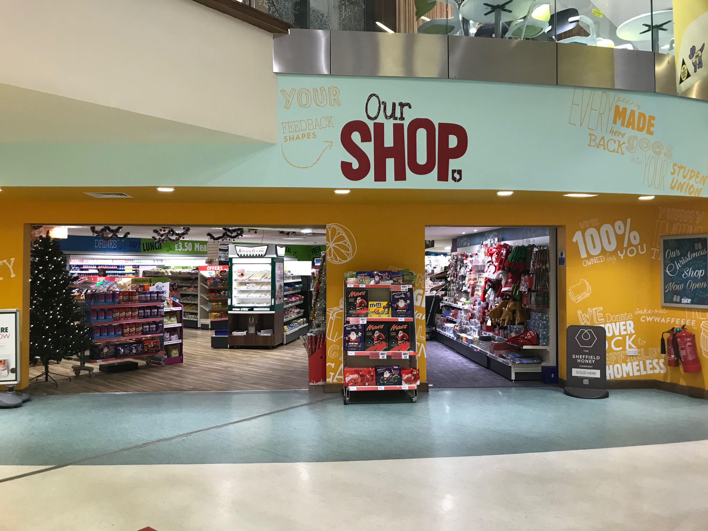
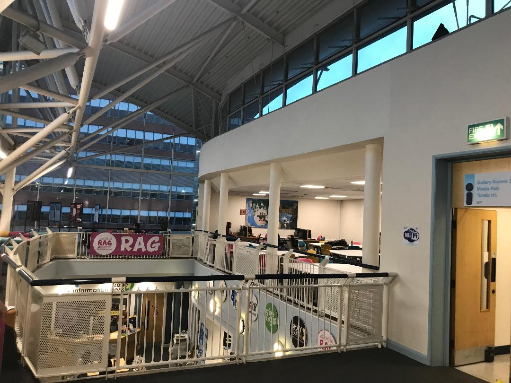
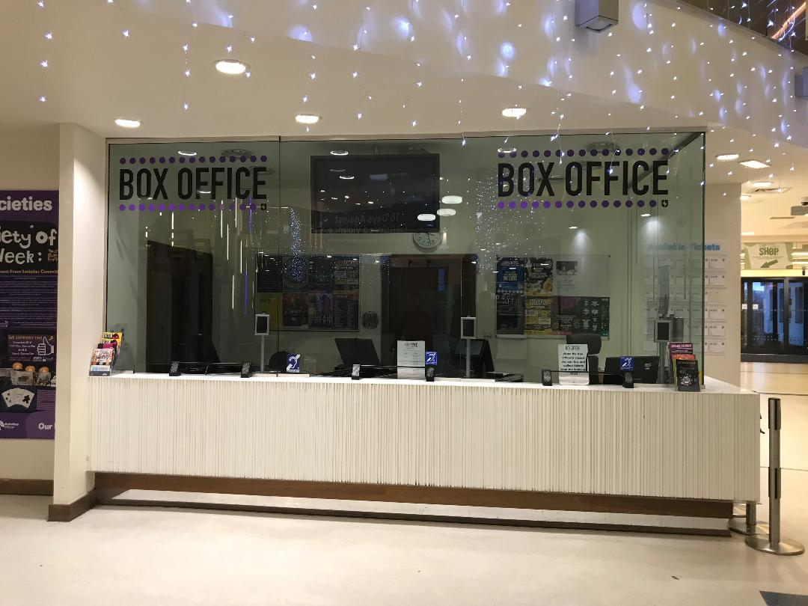

Facilities
The Student's Union building houses a lot of services and facilities crucial to any student. Except from the really questionable design of the actual building which can be a little confusing sometimes, you will find that it simplifies your student life a whole bunch because of the facilities brought to you by the Student's Council who are always looking to tailor this building to every student's needs, from changing the inventory of their groceries store to organizing student parties in the Foundry. This building is also where a lot of student societies hold their activities (If you're looking to join a society you can follow the link on our home page to the list of all the societies). Aside from all of this, the Student's Union gives everyone the opportunity to book a room in their building for all kinds of meetings, games and other activities, and also provides a 370 seat auditorium, lecture theatre, and cinema where all sorts of special events are being held.
STORES
 One of the best part of the Student's Union building is the diversity of things that you can find in there. There is even a shop that has basically everything a student may need: food, drinks, pens, notebooks and so on - OurShop. This small supermarket is run by the Union and the profits go back into the place as good as accessible as possible for everybody. One of the cool things about this supermarket is the international food section, which, you've guessed it, contains food from all over the world. Feel free to come and give it a try! Beside OurStore, there is also the Student's Union Store Store, where you can find a wide range of clothing items, lots of accessories and cute gifts. It is worth mentioning that the prices are amazing for students, so don't miss out!
ROOMS
To say that the Student's Union building is huge would be a severe understatement. From the outside the building is pretty big and looks nice and all that; but when you go inside the building is HUGE. There are so, so many places and rooms to see; it is like a british version of the Louvre Museum. Of course, I am just kidding. What I mean by all that is that there is lots of space inside, for all kinds of activities. You can study, eat, play, dance, basically do anything inside there. One of the most exciting areas in the building is the Gallery. The Gallery is basically a big open space, with lots of chairs and tables, where some societies usually host their activities. One such example would be the Wargaming Society, whose members gather to play war games. Another useful thing is the fact that anyone can book a Gallery Room, where people hold meetings and discuss (important) things. You can even book a whole Auditorium, if you fancy talking in front of 390 people.
SERVICES
The Student's Union building also has a lot of services for students. Have you ever been in need of money but it was very hard for you to find a job that suits you? The Job Shop is the place that can solve this problem. Here you can browse through the currently hiring firms in association with the Student's Union around Sheffield and apply for the ones that seem the most interesting to you. Another great service provided by the Student's Union is Smart Move Sheffield, where similar to the Job Shop you can browse accommodations in Sheffield and choose which one suits you and your friends best. Among the services is the Box Office, where you can buy tickets for pretty much every event that is taking place in the Student's Union and around the university campus, from movie nights to PopTarts. Last but not least, there is the SSID. The SSID or The Student Services Information Desk is the most useful service there can be, a place where no question is left unanswered and no query is rejected. But seriously, this is the place to go when you are lost in the uni life and don't know what is going on around you, which happens more often than expected - the SSID is always there to help point you in the right direction.
Find Sheffield's Student Union on social media!